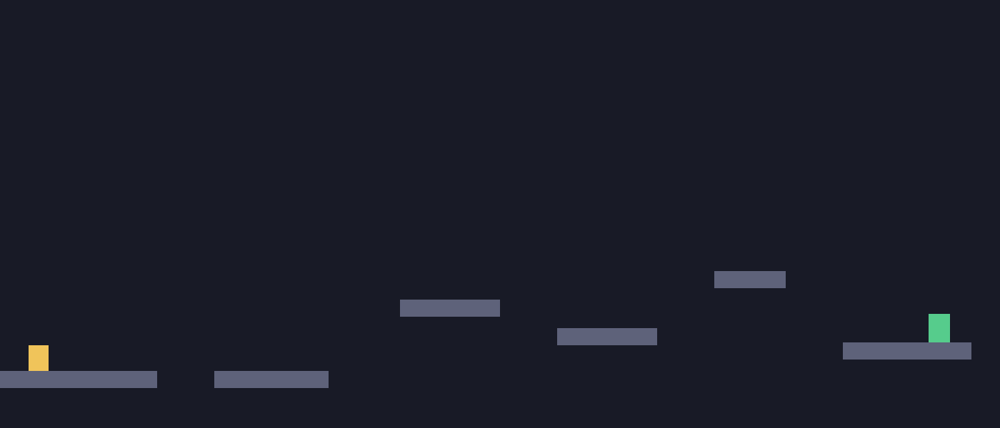

level_1 · PPO, then a fix
Learning to Jump
Five real playthroughs, pulled straight from the training checkpoints with no edits or speedup. The first four are a PPO agent slowly working out the level from reward alone, and it never gets much past one clear in two. The fifth is a different idea, and it's the one that actually works. Every completion rate below comes from a real batch of evaluation episodes, not just the one clip you're watching.

Learning the basics
It's figured out that running right is a good idea, but it has no sense of the gap ahead. It just walks straight into it.
Finding the goal
It's started timing jumps correctly, at least sometimes. This clip is a real clear, but at this point it's still failing more often than not.
Getting consistent
Clearing the gaps is a real skill now, not a lucky roll. This is measured across a much bigger batch of runs than the earlier stages.

Plays confidently
It reaches the goal here. This is its second try in a row, which tracks: at this checkpoint it wins about half the time.
Solved
Turns out PPO's ceiling wasn't a training problem. This level needs a jump at one exact moment after landing, and the agent's view of the world looks almost identical for fifteen ticks on either side of that moment. It couldn't feel time passing. We gave it one feature it tracks itself, ticks since it last touched ground, and had it copy a simple rule-based controller that already solves the level every time. No reward signal needed. That was enough.